Enrollments — FCCN
How to move a student's enrollment from a MySchools placement offer to an Active record when the child is placed with an individual Family Child Care (FCC) Provider — a home-based daycare business overseen by a Family Child Care Network (FCCN) — instead of at a CBO-run site.
Overview
The FCCN enrollment lifecycle takes the same shape as the CBO flow: a parent accepts a placement offer in MySchools, which creates an Draft Enrollment record in ECMS; the vendor finishes filling it out and submits it; and a DOE Enrollment Specialist reviews and approves it. Only then does the child officially count as enrolled and the record becomes Active.
What's different on the FCCN side is who the enrollment is placed with and who actually does the work in the portal. A CBO runs its own sites directly and its own staff log in and submit their own enrollments. An FCCN doesn't run classrooms itself — it oversees a network of small, independent home daycare businesses (FCC Providers), and the individual home providers themselves are generally not the ones logging into ECMS day-to-day. Instead, the FCCN's own staff (an Affiliation Manager, an Education Specialist, or the account's Network Director) work the enrollment in the portal on the Provider's behalf.
This guide walks that same Draft → Submitted → Active lifecycle, but from that FCCN vantage point, calling out each concrete place the data model and the workflow diverge from the CBO version of this same guide.What's a "Class," in the FCCN context?
A Class is the record ECMS uses to group students enrolled in the same program and seat type, and to track how many of its seats are occupied. For a CBO, this maps onto something real and literal — an actual physical classroom. For an FCCN, there's no literal "classroom" — a home daycare doesn't have separate rooms the way a CBO site does. Instead, each Class on an FCC Provider's site represents one age group and seat type that provider serves.
For example, a home daycare that serves 3-year-olds on a School Day Year (SDY) schedule would have a single "3K SDY" Class. When a child is enrolled into that provider's program, they're enrolled into that Class. If the same home daycare also takes Infant, Toddler, or 2K children, each of those age groups gets its own separate Class — one Class per age-group-and-seat-type combination the provider actually offers, each with its own Capacity and Seats Occupied count.
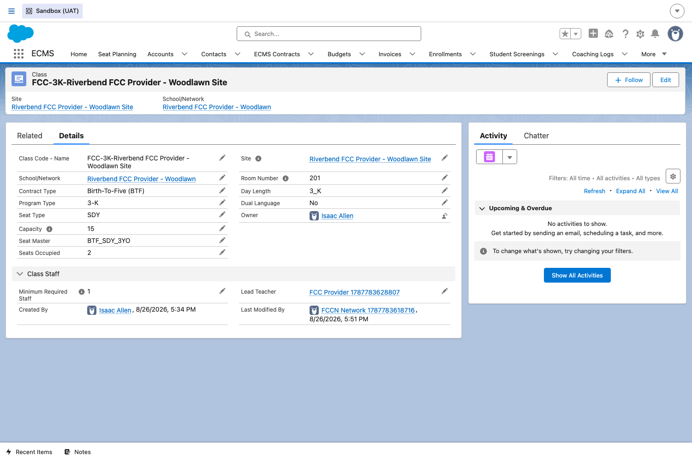
Creating a new Class in the portal
An FCCN's network staff (Network Director, Affiliation Manager) can add a new Class for one of its affiliated Providers directly from the portal — for example, if Riverbend's home daycare starts taking Toddler-age children in addition to its existing 3K group.
DO From the portal, go to Sites, open the Provider's site record, click the Related tab, and click New on the Classes related list.
RESULT The Provider's Site record already shows its existing Classes related list — Riverbend's one existing 3K Class — with a New button to add another.
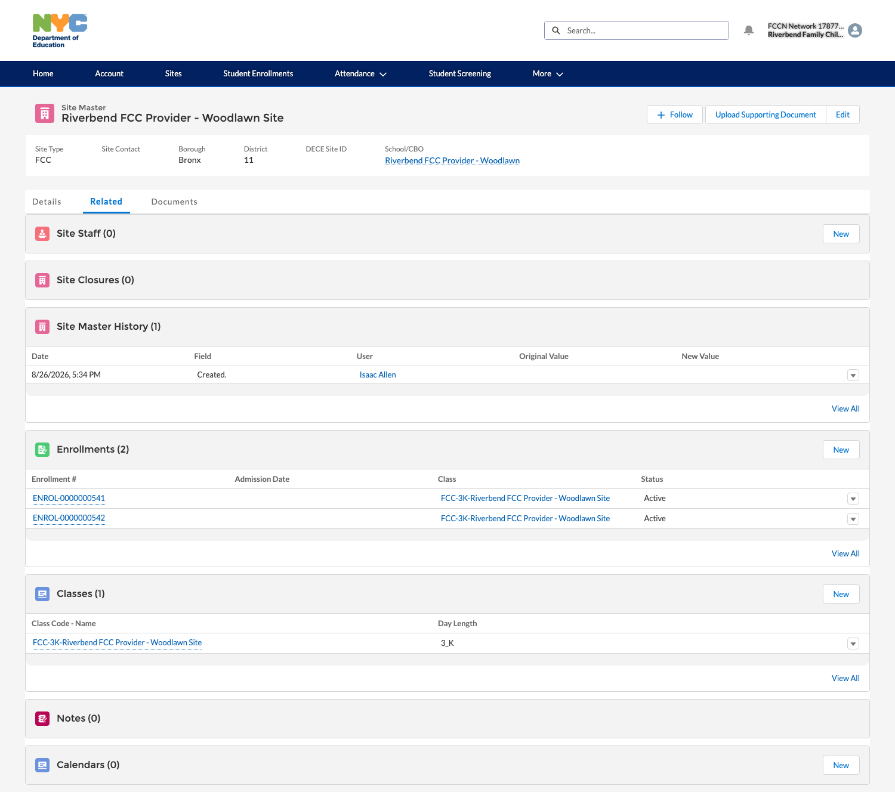
DO Fill in Class Code - Name, confirm Site (pre-filled), and set Contract Type, Program Type, Seat Type, and Capacity for the new age group, then choose a matching Seat Master entry.
RESULT A "New Class" form opens, pre-linked to the Provider's site, ready to define this second age group as its own, separate Class.
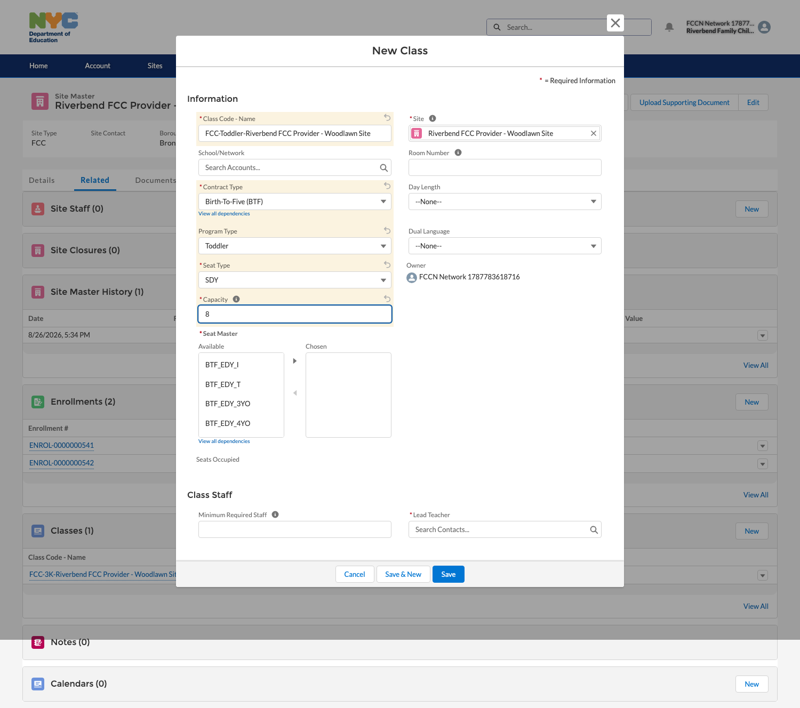
Enrollment status lifecycle at a glance
Every enrollment — CBO or FCCN — moves through the same set of statuses, regardless of which program or vendor type it belongs to:
- Draft — the default status every enrollment starts in, whether created directly or landed from MySchools.
- Submitted — the vendor has finished filling it out and sent it for DOE review.
- Information Requested — the Enrollment Specialist needs something more before deciding.
- Approved — the Enrollment Specialist has signed off.
- Active — once approved and not waiting on an ACCIS posting confirmation, the enrollment automatically advances here and the child officially counts as enrolled.
- Rejected — always requires a reason; it's not optional on this status.
- Discharged — the child has left the program (transfer, school change, or end of the school/summer period); Discharge Date and a status reason are both required.
This is a deliberately short, fixed list — older statuses like "New" and "Inactive" were removed from the lifecycle entirely so every enrollment, across every program type, moves through the same predictable chain.
Steps
1Open the Enrollments list
DO Click the Enrollments tab in the top navigation bar and switch to a list view that shows every enrollment across CBOs and FCCNs together.
RESULT The Enrollments list loads with columns for Network/School Name, FCC Provider Name, and Site shown side by side — on a CBO-side row, Network/School Name and Site both point to the CBO and its site; on an FCCN-side row, Network/School Name is the FCCN, and the FCC Provider Name column is populated with the individual home Provider.
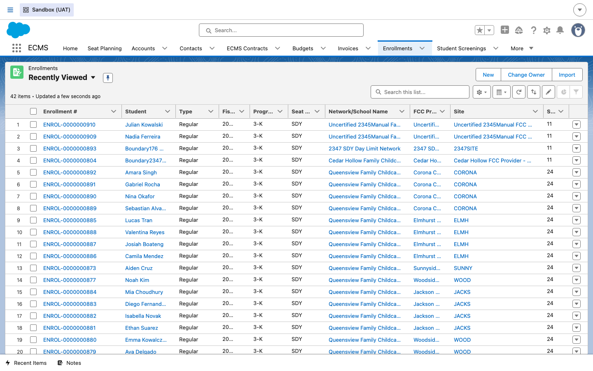
2Open the MySchools draft enrollment
DO Click into a Draft-status enrollment record that was created from a MySchools placement offer at an FCC Provider.
RESULT The Enrollment record opens showing the same lifecycle status bar as the CBO flow (Draft → Submitted → Information Requested → Rejected → Approved → Active → Discharged), currently sitting at Draft. Notice the record's Owner is already an FCCN Network user, not a CBO staff member and not the individual Provider.
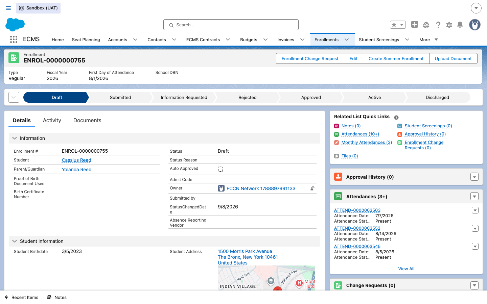
3Confirm the affiliated FCC Provider account
DO From the enrollment, open the FCC Provider account it's linked to — here, Cedar Hollow FCC Provider - Morris Park.
RESULT The Account record loads with Account Record Type: Family Childcare Provider and an Affiliated Network lookup back to the parent FCCN (Cedar Hollow Family Childcare Network). The Related List Quick Links include Enrollments (Provider Name) — the FCC-side equivalent of a CBO site's Enrollments related list.
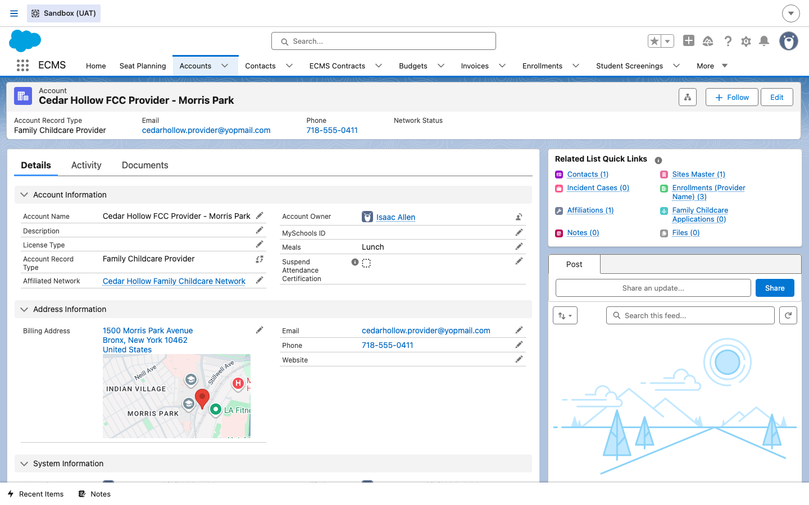
4Confirm the parent FCCN account
DO Follow the Affiliated Network lookup up to the FCCN account itself — Riverbend Family Childcare Network.
RESULT The Account loads with Account Record Type: Family Childcare Network, a dedicated Providers tab (in place of a CBO's Sites Master list), and an Affiliations (Affiliated Network) related list showing every home Provider the network oversees.

5Find the Network Contact who works the portal
DO From the FCCN account's Contacts related list, open its Network Director contact.
RESULT The Contact record loads with Log in to Experience as User, Provision Contact, and View Partner User buttons — the same provisioning mechanism used for a CBO's staff, but here it's granted to the network's own staff rather than to the individual home Provider.
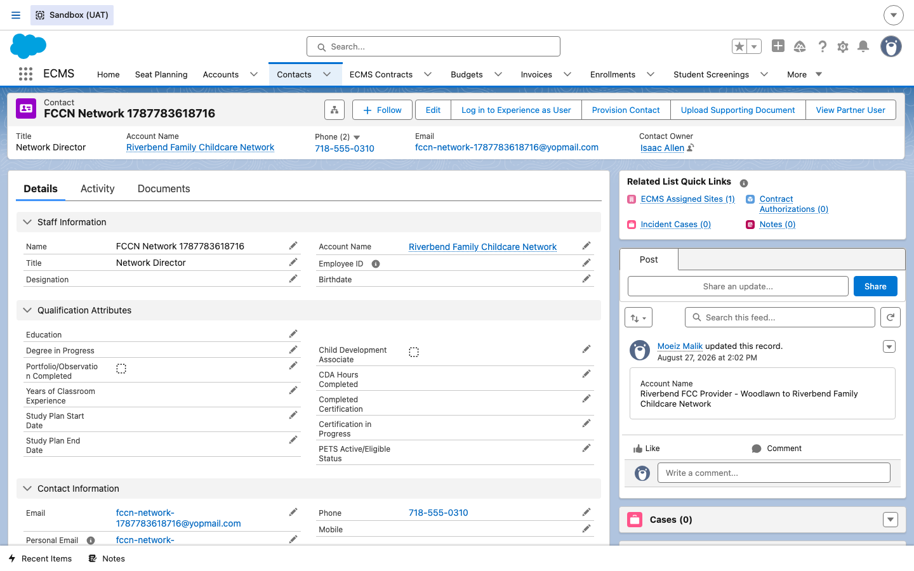
6View the vendor portal as the Network Director
DO Click Log in to Experience as User on the Network Director's Contact record.
RESULT The vendor portal home page loads under the DOE-branded header, showing the Network Director's name and the FCCN account in the top-right corner. This FCCN user's quick-action tiles are Create Enrollment and Report Incident only — there is no Create Budget or Create Invoice tile, because FCCNs have no Budget/Invoice model in ECMS.
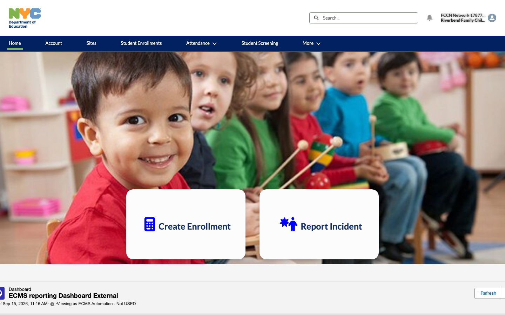
7Review enrollments scoped to the network
DO Click Student Enrollments in the portal's top navigation.
RESULT The Enrollments list loads scoped to this network, with a FCC Provider Name column identifying which affiliated home Provider each enrollment belongs to — the Network Director sees enrollments across every Provider in the network, not just one site.
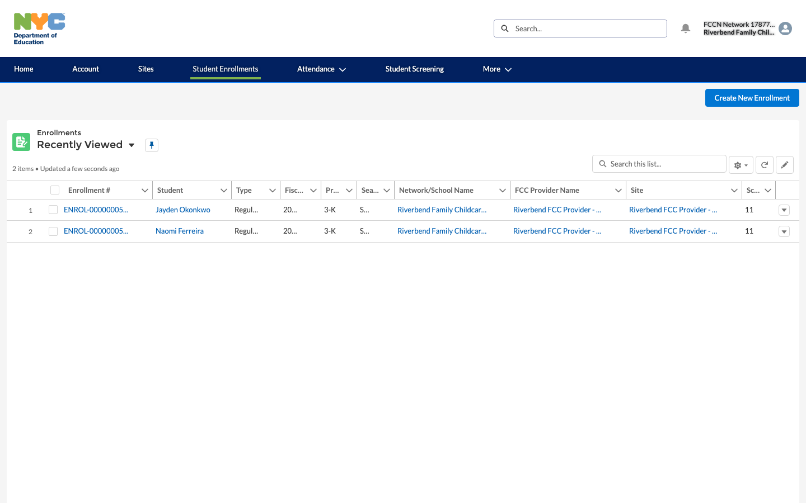
8DOE Enrollment Specialist review (Submitted)
DO Back in the internal admin view, open a Submitted enrollment awaiting review — for example ENROL-0000000071.
RESULT The lifecycle bar now shows Submitted, and the Approval History related list shows an Enrollment Specialist Approval step with Status Pending, assigned to the Enrollment Specialists queue. This works identically regardless of whether the enrollment came from a CBO site or an FCC Provider.
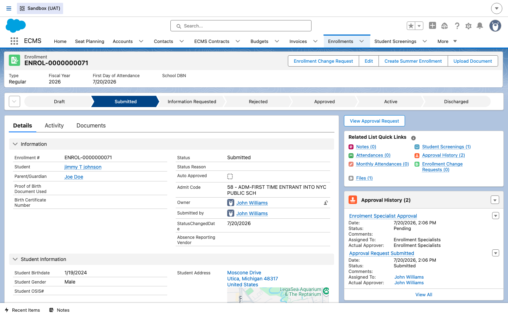
DO Click View Approval Request at the top of the record, then click Approve (or Reject, or Request Additional Information if something's missing) and add a comment.
RESULT A separate Approval Request record opens, showing the Submitter, Date Submitted, and who it's assigned to, with Approve, Reject, and Reassign actions available right at the top.
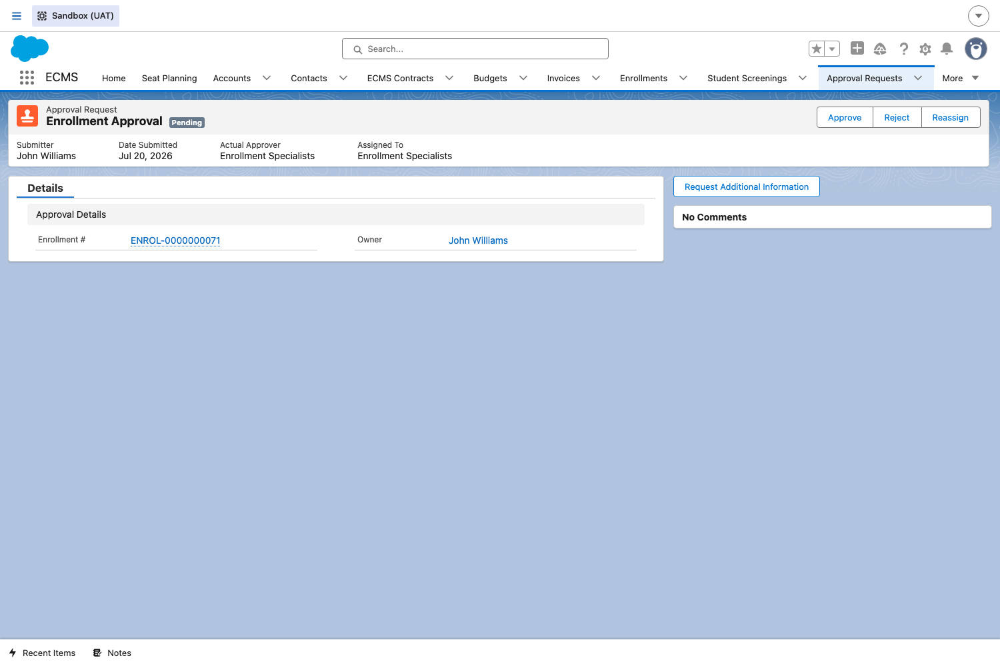
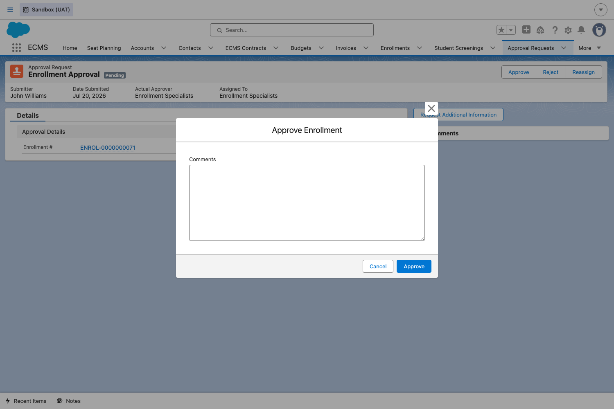
Once approved, the enrollment itself updates immediately — the lifecycle bar advances straight to Active (not just "Approved"), and the Approval History entry now shows Approved, with the comment and the approver's name on file.
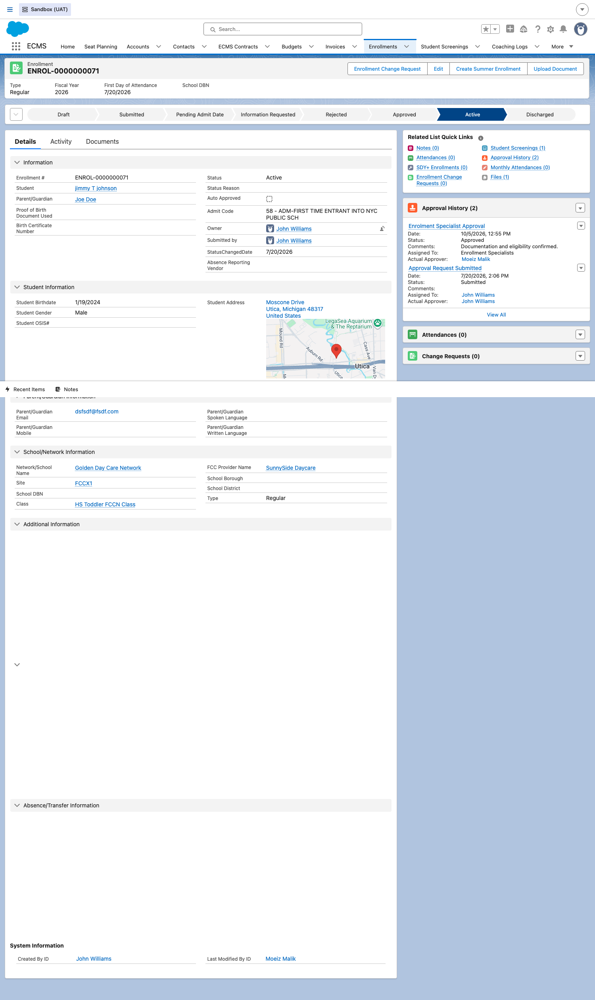
9Confirm the Active enrollment
DO Open an enrollment that has already cleared review — ENROL-0000000541 for student Naomi Ferreira, tied to the Riverbend FCC Provider - Woodlawn.
RESULT The lifecycle bar shows Active, and the Approval History confirms an approved Enrollment Specialist Approval entry. Look closely at Owner and Submitted by: both are the FCCN's Network Contact, not the student's FCC Provider and not a CBO staff member — concrete confirmation that the network's own staff, not the home Provider, drove this enrollment through the portal end to end.
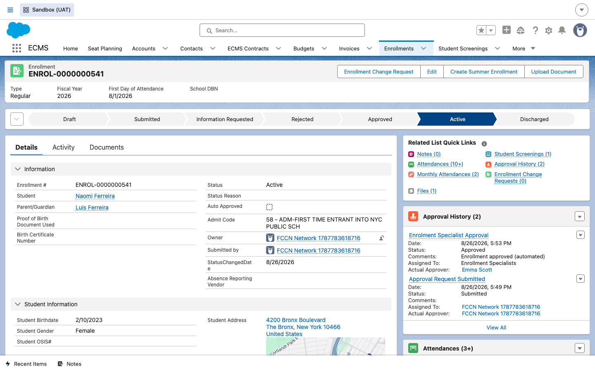